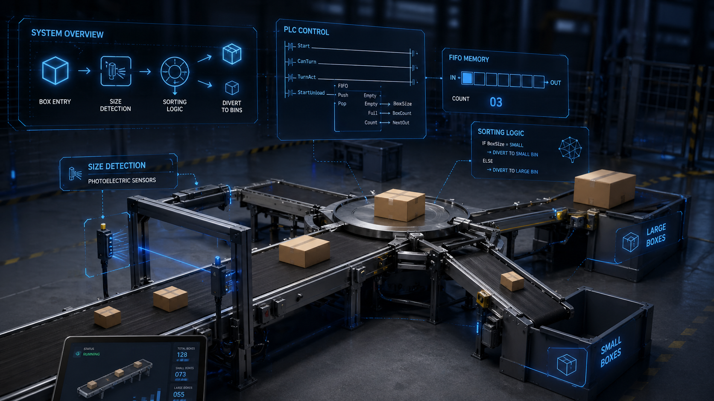
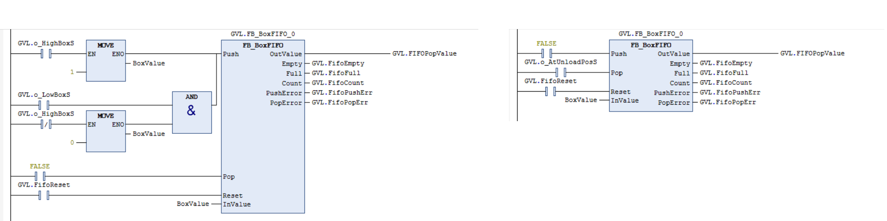
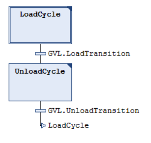

A PLC-based material handling project that sorts multiple boxes by size in Factory IO using Ladder Logic, Structured Text, sensor-based tracking, FIFO memory, conveyor control, and turntable unloading logic.
This project focuses on designing and implementing an automated box sorting system in Factory IO using PLC logic. The system detects boxes on a conveyor, classifies each box as big or small, tracks the classification while multiple boxes move through the system, and then routes each box to the correct unloading path using a turntable mechanism.
The main engineering challenge was not simply detecting one box, but reliably sorting multiple boxes that may be on the conveyor at the same time. Since the size detection sensors and the unload turntable are physically separated, the PLC must remember the classification of each box after it leaves the sensor area and recall the correct value when that same box reaches the sorting point.

The control system is responsible for coordinating several machine functions:
The final solution combines Ladder Logic for machine control and a reusable Structured Text function block for FIFO tracking. This makes the program more modular, easier to debug, and closer to how reusable logic is built in real industrial automation projects.
The objective of this project was to create a reliable PLC-based box sorting system that could handle continuous material flow instead of only single-box operation.
The project aims to achieve the following:
The system is structured around a conveyor-based material handling process. Boxes enter the system through the entry conveyor and feeder conveyor, pass through the size detection area, continue along the belt, and eventually arrive at the unload turntable. The PLC continuously evaluates sensor states, tracks stored box types, and commands the correct actuator response.
Because the size sensors and unloading station are separated by distance, the control system uses a queue-based architecture. When a box is measured, its classification is pushed into FIFO memory. When a box reaches the sorting point, the oldest stored value is popped from FIFO memory and used as the sorting decision for that box.
This architecture separates the machine into clear responsibilities: sensors identify the box, FIFO memory tracks the box, and the unload logic acts only when the physical box reaches the sorting station. This separation made the system easier to troubleshoot and allowed the sorting logic to remain stable even when multiple boxes were present on the belt.
The control philosophy for this project was based on deterministic material tracking. Instead of making the sorting decision from the current state of the size sensors, the PLC records the box type at the detection point and uses that stored value later when the same box reaches the unload turntable.
This approach is important because the sensor area and sorting area are far apart. By the time a box reaches the turntable, the size sensors may already be detecting a different box. Without memory, the PLC could incorrectly assign the newest sensor reading to the wrong physical box.

This made the project behave much closer to an industrial conveyor tracking system, where objects are identified upstream and routed downstream after a delay caused by conveyor travel distance.
The sorting sequence was designed so that each step has a clear trigger and a clear control action. This prevents the PLC from mixing sensor states from different parts of the conveyor and makes the process easier to troubleshoot during commissioning.
The entry conveyor and feeder conveyor are enabled when the system receives a start command and the machine is ready to run.
When a box reaches the size detection sensors, the PLC determines whether the box is big or small.
The size value is pushed into the FIFO queue and remains stored while the physical box travels toward the unload station.
When the box reaches the unload sensor, the PLC pops the next stored FIFO value and commands the route for that box.
This sequence allowed the system to sort continuously instead of relying on one box being fully completed before the next one enters the conveyor.
The FIFO function block is the core of the multi-box tracking solution. It stores integer values in a circular buffer and exposes useful status outputs such as Empty, Full, Count, PushError, and PopError. This makes the logic easier to monitor during testing and helps identify issues such as popping from an empty queue or pushing when the queue is full.
The function block uses rising-edge detection internally, so a sensor that remains on for several PLC scans only creates one push or pop event. This is important because a box may stay in front of a photoeye for longer than one PLC scan.
FUNCTION_BLOCK FB_BoxFIFO
VAR_INPUT
Push : BOOL; // Add a new box type on rising edge
Pop : BOOL; // Read/remove oldest box type on rising edge
Reset : BOOL; // Clear FIFO
InValue : INT; // 0 = small, 1 = big
END_VAR
VAR_OUTPUT
OutValue : INT;
Empty : BOOL;
Full : BOOL;
Count : INT;
PushError : BOOL;
PopError : BOOL;
END_VAR
VAR
Buffer : ARRAY[0..19] OF INT;
Head : INT := 0;
Tail : INT := 0;
Size : INT := 20;
PushOld : BOOL := FALSE;
PopOld : BOOL := FALSE;
PushEdge : BOOL;
PopEdge : BOOL;
END_VAR
PushEdge := Push AND NOT PushOld;
PopEdge := Pop AND NOT PopOld;
PushOld := Push;
PopOld := Pop;
IF Reset THEN
Head := 0;
Tail := 0;
Count := 0;
OutValue := 0;
Empty := TRUE;
Full := FALSE;
PushError := FALSE;
PopError := FALSE;
ELSE
PushError := FALSE;
PopError := FALSE;
IF PushEdge THEN
IF Count < Size THEN
Buffer[Tail] := InValue;
Tail := Tail + 1;
IF Tail >= Size THEN
Tail := 0;
END_IF;
Count := Count + 1;
ELSE
PushError := TRUE;
END_IF;
END_IF;
IF PopEdge THEN
IF Count > 0 THEN
OutValue := Buffer[Head];
Head := Head + 1;
IF Head >= Size THEN
Head := 0;
END_IF;
Count := Count - 1;
ELSE
PopError := TRUE;
END_IF;
END_IF;
Empty := Count = 0;
Full := Count >= Size;
END_IF;
In the main PLC program, the FIFO block is called from Ladder Logic. The push input is triggered by the upstream box detection point, the pop input is triggered by the unload point, and the output value is used to decide which route the current box should take.
The PLC implementation combines Ladder Logic and Structured Text. Ladder Logic was used for the main machine sequence because it provides clear visibility for conveyor outputs, turntable commands, timers, and sensor conditions. Structured Text was used for the reusable FIFO function block because the queue logic is cleaner and more maintainable when written as indexed buffer logic.
The PLC program was structured around a GRAPH-based sequence that coordinated the load and unload phases of the sorting process.
The LoadCycle handled box entry and preparation for sorting, while the UnloadCycle managed the turntable and discharge operation.
Transitions such as GVL.LoadTransition and GVL.UnloadTransition were used to move between these states, ensuring that the system followed a deterministic and repeatable operating sequence.

A key learning outcome was understanding that physical distance in a conveyor system must be represented logically in the PLC. The sensors only provide information at specific locations, so the program must bridge the gap by storing and recalling information at the correct moment.
This project brought together several practical controls engineering skills, including PLC programming, sensor-based sequencing, reusable function block design, conveyor tracking, and commissioning-style troubleshooting.
Overall, this project demonstrates my ability to build a working PLC automation solution that handles real sequencing challenges, not just simple input-output control. The FIFO-based tracking method shows practical thinking around conveyor systems, part identity, and reusable control logic.